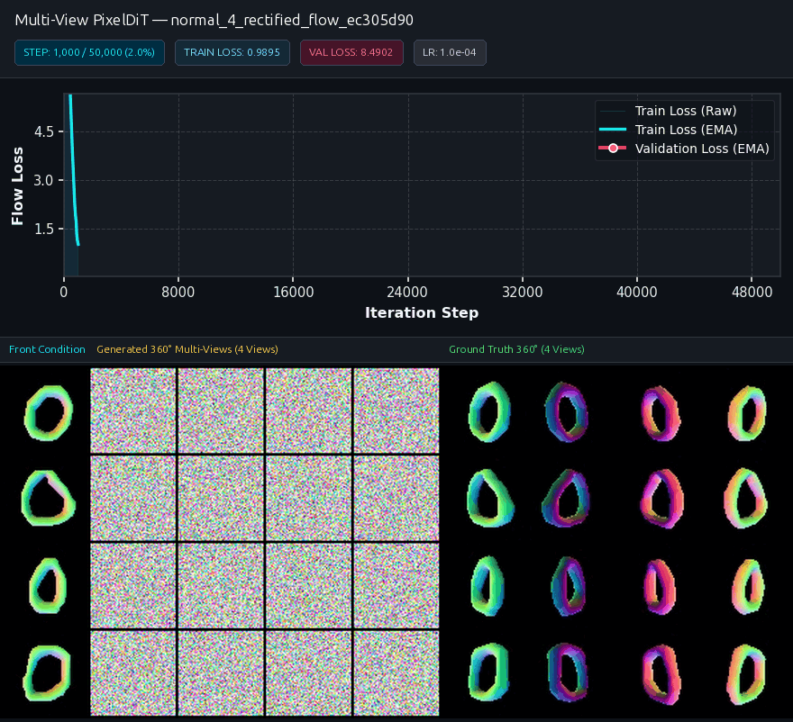
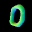
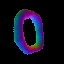
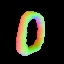
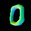

4-View Multi-View Geometry Synthesis ($V=4$)
Simultaneous 4-camera normal synthesis at canonical $45^\circ, 135^\circ, 225^\circ, 315^\circ$ azimuth viewpoints.
4-View Generative Training Dynamics

Final Flow Loss
0.0433
Normal PSNR
23.03 dB
Mean Error (MAE)
7.76°
Median Error (MedAE)
1.08°
Acc < 22.5°
92.6%
Cosine Similarity
97.67%
Interactive 4-View Digit Browser
Select digit class (0–9) to inspect generated 4-view surface normals vs. ground truth.





Full Comparison Strip [Front | Generated 45°, 135°, 225°, 315° | Ground Truth 45°, 135°, 225°, 315°]:

4V Training & Validation Loss Convergence
Empirical 50k steps descent from 8.49 down to 0.0433.
4V ODE Steps vs. PSNR & Angular Error (°)
Euler ODE step sweep saturating peak PSNR (23.37 dB) in 5–10 steps.
4V Cross-View Geometric Alignment Radar
High angular correlation across canonical viewpoints ($45^\circ, 135^\circ, 225^\circ, 315^\circ$).
Throughput Scaling vs. Patch Tokenization
Token complexity reduction ($N \propto 1/P^2$) accelerating training throughput.
4-View Geometry Emergence Timeline (50k Steps)

Step 1,000 (Loss: 8.490)
Initial silhouette formation

Step 10,000 (Loss: 1.754)
3D structure emerges

Step 25,000 (Loss: 0.226)
Surface normals refine

Step 50,000 (Loss: 0.043)
Sharp 360° geometry